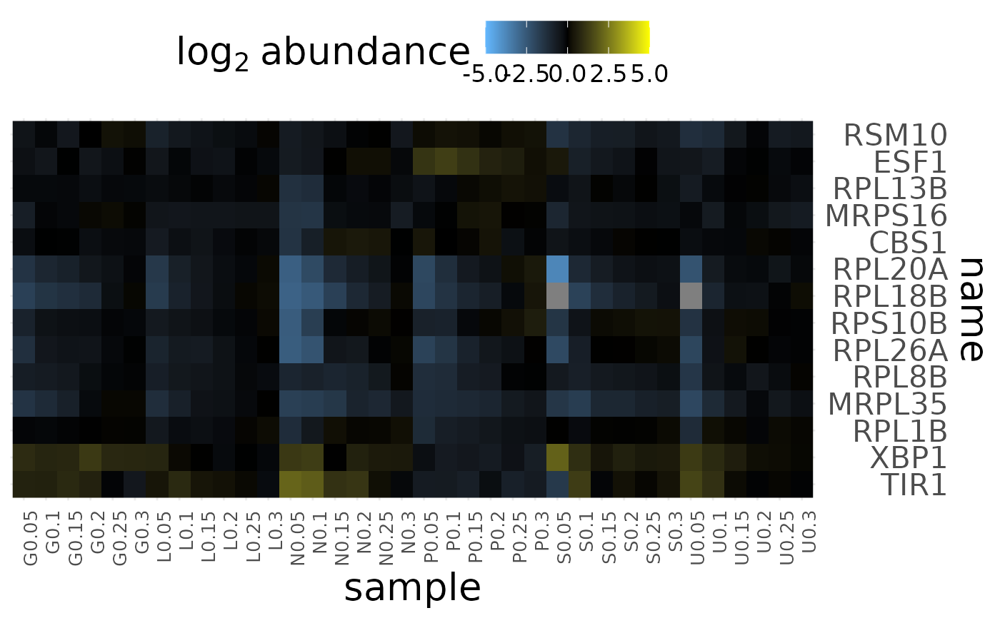

Generate a heatmap visualization of a features x samples matrix of measurements.
plot_heatmap(
tomic,
feature_var = NULL,
sample_var = NULL,
value_var = NULL,
cluster_dim = "both",
distance_measure = "dist",
hclust_method = "ward.D2",
change_threshold = Inf,
max_display_features = 800,
x_title = NULL,
y_title = NULL,
colorbar_title = NULL,
transpose = FALSE
)Either a tidy_omic or triple_omic object
variable from "features" to use as a unique feature label.
variable from "samples" to use as a unique sample label.
which variable in "measurements" to use for quantification.
rows, columns, or both
variable to use for computing dis-similarity
pearson correlation
euclidean distance
method from stats::hclust to use for clustering
values with a more extreme absolute change will be thresholded to this value.
aggregate and downsample distinct feature to this number to speed to up heatmap rendering.
label for x-axis (if NULL then use feature_var)
label for y-axis (if NULL then use sample_var)
label for color-bar; default is log2 abundance
if TRUE then samples will be rows and features will be columns. Set all other variables as if transpose was FALSE.
a ggplot2 grob
library(dplyr)
tomic <- brauer_2008_triple %>%
filter_tomic(
filter_type = "category",
filter_table = "features",
filter_variable = "BP",
filter_value = c(
"protein biosynthesis",
"rRNA processing", "response to stress"
)
)
plot_heatmap(
tomic = tomic,
value_var = "expression",
change_threshold = 5,
cluster_dim = "rows",
distance_measure = "corr",
transpose = FALSE
)
